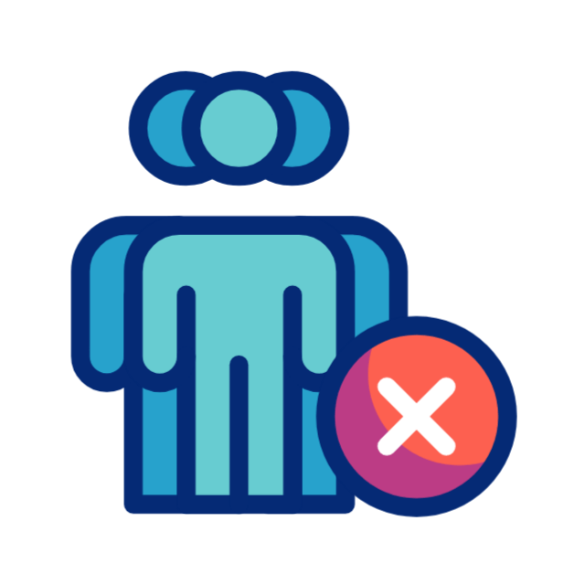

Comportamento correto para o rosto:
- Rosto centralizado, olhando para câmera
- Cabeça reta e alinhada
O correto para o fundo da imagem:
- Deve ser em um lugar claro
- Estar em um fundo branco
O correto para a iluminação da imagem:
- O fundo deve ser iluminado
- Não ter sombras no rosto

Comportamento correto para o usuário:
- Não ter mais de um rosto
- Fundo sem desenhos de rosto
Resumindo as instruções para a foto:
- Rosto centralizado
- Cabeça reta e alinhada
- O fundo branco e iluminado
- Um rosto apenas
Aceitar termos de uso